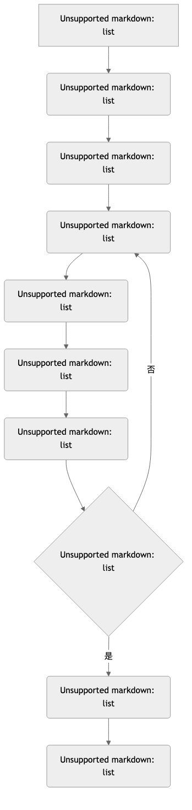

扎根理论¶
在传统的科学研究中，我们通常先有一个理论，然后去收集数据来验证它。但如果在一个全新的、缺乏理论的领域进行探索，我们该从何处着手？扎根理论（Grounded Theory） 彻底颠覆了这一传统，它倡导一种“从下至上”的研究路径，其核心使命在于从原始数据中，系统性地、归纳性地“生长”出理论，而非检验现有的理论。
它由社会学家格拉泽（Glaser）和斯特劳斯（Strauss）在1967年提出，旨在为定性研究提供一套严谨、规范、透明的分析流程，以回应外界对定性研究“过于主观”的批评。扎根理论的精髓在于，它相信理论就蕴藏在数据之中，研究者的任务不是去“发明”理论，而是通过一套系统性的编码和比较程序，去“发现”它。当你面对海量的定性资料（如访谈稿、田野笔记）而不知所措，希望从中提炼出具有解释力的理论框架时，扎根理论提供了一套强大而可靠的操作指南。
扎根理论的核心过程与理念¶
扎根理论并非一种单一的方法，而是一整套包含着独特思维方式和操作程序的系统。其核心理念贯穿于整个研究过程。
- 持续比较法（Constant Comparative 方法）：这是扎根理论的引擎。在整个分析过程中，研究者需要不断地在“数据与数据”、“数据与概念”、“概念与概念”之间进行持续的比较，以发现其异同，并提炼出概念的属性和边界。
- 理论性抽样（Theoretical Sampling）：与研究开始前就确定样本的传统做法不同，扎根理论的抽样是与理论构建同步进行的。研究者根据分析过程中涌现出的新概念和理论雏形，有目的地去选择下一个能够为理论发展提供最大信息量的样本（数据来源）。抽样过程会一直持续到理论达到“饱和”为止。
- 理论饱和（Theoretical Saturation）：这是判断研究是否可以结束的关键标准。当新的数据不再能为已有的概念和理论带来任何新的属性或洞察时，就意味着理论已经“饱和”，研究的数据收集阶段可以告一段落。
- 备忘录（Memo-writing）：在编码和分析的每一步，研究者都必须随时记录下自己的思考过程、理论联想、概念之间的关系假设等。这些备忘录是连接数据与最终理论之间的桥梁，是研究者思想轨迹的完整记录。
扎根理论的编码流程¶
扎根理论最著名的贡献在于其系统性的三级编码流程（以斯特劳斯学派为代表）：

如何进行一次扎根理论研究¶
-
从问题开始，而非理论
带着一个开放性的研究问题进入研究领域，但要刻意悬置（放下）任何先入为主的理论假设。
-
进入田野并开始理论性抽样
选择你的第一个访谈对象或观察场景，收集第一批数据。记住，这只是一个起点。
-
进行开放式编码
对收集到的第一批数据进行逐行分析，打上标签，形成几十个甚至上百个初始概念。同时开始撰写备忘录，记录你的想法。
-
进行主轴编码，发展范畴
当你积累了一定的概念后，开始寻找它们之间的联系，将相关的概念聚合成更高层次的“范畴”，并尝试用“主轴编码”的逻辑框架来组织它们之间的关系。
-
持续进行理论性抽样与编码
根据你已经形成的初步范畴和理论雏形，去寻找下一个最能帮助你发展、检验或完善这些范畴的样本。例如，如果你发现“信任”是一个重要范畴，你下一阶段就应该特意去寻找那些“信任缺失”的案例进行访谈。这个“数据收集-编码分析-再抽样”的循环会一直持续。
-
识别核心范畴并进行选择性编码
在所有范畴中，寻找那个能够统领全局、解释力最强的“核心范畴”。然后，围绕这个核心范畴，将所有其他范畴系统地整合起来，讲述一个连贯、有深度的理论故事。
-
检验理论饱和并完成报告
当新的数据无法再为你的理论增添任何新意时，理论便达到了饱和。最后，将你构建的理论，连同支撑它的数据证据和你的分析过程，清晰地呈现在研究报告中。
应用案例¶
案例一：斯特劳斯与格拉泽对“临终关怀”的研究
- 场景：这是催生扎根理论的经典研究。两位学者希望了解医院中的护士是如何应对和处理病人的死亡过程的。
- 应用：他们没有带任何预设的理论，而是直接进入医院进行长期的参与式观察和访谈。通过对大量数据的持续比较和编码，他们最终“发现”并构建了一个名为“死亡意识情境（Awareness of Dying）”的核心理论。该理论揭示了，护士与病人之间的互动模式，深刻地受到“双方对病人是否临近死亡的知晓程度”这一核心范畴的影响，并据此发展出“开放式意识”、“封闭式意识”等不同策略。
案例二：探索“职业倦怠”的形成过程
- 场景：一位研究者希望从员工的视角，深入理解“职业倦怠”是如何一步步发生的。
- 应用：她访谈了20位来自不同行业、经历过严重职业倦怠的员工。通过扎根理论的编码分析，她从访谈故事中提炼出了一个过程理论。该理论可能包含这样几个阶段：1. 期望过高（初始条件）；2. 现实冲击与资源不足（现象）；3. 情感耗竭与去人格化（行动策略）；4. 身心耗竭，离职（结果）。
案例三：理解用户如何“创造性地”使用一款产品
- 场景：一家软件公司发现，很多用户在使用其产品的方式上，完全超出了设计师的初衷。
- 应用：产品团队通过对这些“超级用户”的深度访谈和屏幕录像分析，运用扎根理论的方法，试图构建一个关于“用户创造性使用行为”的理论。他们发现，“社区分享”和“个人身份认同”是驱动这种行为的核心范G畴，这为产品未来的社区功能设计提供了全新的理论指导。
扎根理论的优势与挑战¶
核心优势
- 创造性与原创性：能够从一手数据中产生全新的、具有深度解释力的理论，特别适用于探索未知领域。
- 过程严谨、透明：提供了一套系统性的操作流程，使得定性分析的过程不再是一个“黑箱”，增强了研究的可信度。
- 紧密贴合数据：理论牢牢地“扎根”于经验数据，避免了理论与现实脱节的问题。
潜在挑战
- 极其耗时耗力：数据的收集与分析过程是同步、迭代进行的，对研究者的时间和精力投入要求极高。
- 对研究者能力要求高：要求研究者具有高度的理论敏感度、抽象思维能力和模糊性容忍力。
- 不同学派的争论：扎根理论内部存在不同学派（如格拉泽的经典扎根理论和斯特劳斯的程序化扎根理论），其在具体操作上存在差异，可能会让初学者感到困惑。
延伸与关联¶
- 定性研究：扎根理论是定性研究中，最注重理论构建功能的方法论。
- 民族志与案例研究：这两种方法收集到的大量、丰富的定性资料，是进行扎根理论分析的理想数据来源。
来源参考：安塞尔姆·斯特劳斯（Anselm Strauss）和巴尼·格拉泽（Barney Glaser）在1967年合著的《扎根理论的发现》（The Discovery of Grounded Theory）是该方法的开山之作。之后，斯特劳斯与朱丽叶·科宾（Juliet Corbin）合著的《定性研究的基础：扎根理论的程序与技术》（Basics of Qualitative Research: Grounded Theory Procedures and 技术s）则提供了更具操作性的流程指导。